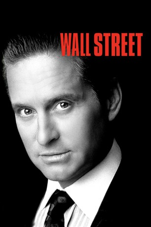

#975 Wall Street 1
Auszeichnungen: 1 Oscars gewonnen 1 GoldenGlobes gewonnen
 
 IMDB-Wertung: 7.4 / 10
IMDB-Wertung: 7.4 / 10  Metascore: 56
Metascore: 56 
Bud Fox, ein strebsamer, junger Börsenmakler, will das schnelle Geld machen. Nachdem er den skrupellosen, millionenschweren Spekulanten Gordon Gekko kennenlernt, scheint ein Traum in Erfüllung zu gehen. Aber dieser Traum hat seinen Preis. Durch Gekko wird Bud in einen Strudel krimineller Machenschaften gezogen. Als Gekko jedoch die Fluglinie, bei der Buds Vater beschäftigt ist, zu ruinieren droht, erkennt er seinen Irrtum. Es ist die Stunde der Entscheidung von Gier gegen Gewissen.
Jahr: 1987
Dauer: 126 Minuten
FSK: 12
Land: USA Studio: 20th Century FoxTonspuren: DTS - ,
Untertitel: Deutsch,
Auflösung: 1080p (1920x1040) Größe: 12083 MB
Genre: Krimi, Drama
Regisseur:  Oliver Stone
Oliver Stone
Drehbuch: Stanley Weiser, Oliver Stone
Soundtrack: Stewart Copeland
Darsteller:
Datei: X:\2-Dilogie(N-Z)\Wall Street\Wall Street 1 (1987, FSK12, 1920x1040).mkv seit 30.04.2015
Festplatte: HD Collection-2(A-Z)-3(A-M)
 Alle Filme aus Gruppe '2-Dilogie(N-Z)\Wall Street'
Alle Filme aus Gruppe '2-Dilogie(N-Z)\Wall Street'